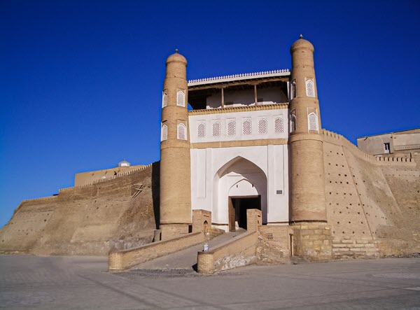

O‘zbekiston qadimiy tarix va boy madaniyatga ega davlatdir. Boy meʼmoriy meros, son-sanoqsiz tarixiy obidalar, sharqona bozorlar va zamonaviy savdo markazlari, noyob qoʻriqxonalar va tabiiy bogʻlar, sanatoriylar va dam olish maskanlari – mamlakatimizda har kim oʻzi uchun nimadir koʻrishi va qayerda dam olishi mumkin.
O‘zbekiston me’morchiligi o‘ziga xos va rang-barangdir. Hozirgi globallashuv sharoitiga qaramay, mamlakatimizda har yili butun dunyodan millionlab sayyohlar tashrif buyuradigan eng qadimiy me’moriy meros obidalari saqlanib qolgan.

Bularning barchasi Oʻzbekiston hududining oʻrta asrlarda Buyuk Ipak yoʻlining markaziy boʻgʻini boʻlganligi, shuningdek, 14—16-asrlar va temuriylar davrida islom meʼmorchiligining gullab-yashnashi bilan bogʻliq. 16-asrda Shayboniylar.